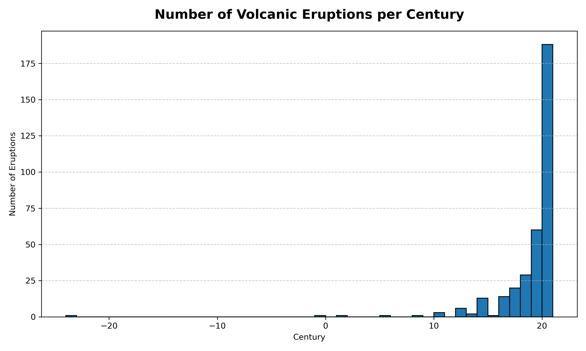
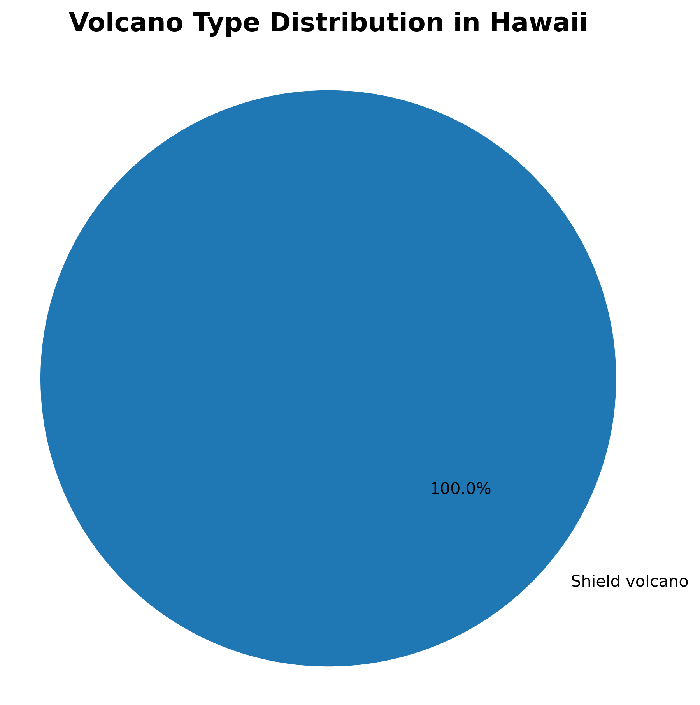

Number of Volcanic Eruptions per Century
This bar chart illustrates how volcanic eruptions have varied over centuries. It highlights a significant increase in recorded eruptions in recent centuries, potentially due to better monitoring, population growth, and improved record-keeping.
Volcano Type Distribution in Hawaii
This pie chart shows that all volcanoes in Hawaii are classified as shield volcanoes. These volcanoes typically produce gentle, effusive eruptions and contribute to the formation of broad volcanic islands like those found across the Hawaiian archipelago.
Volcano Type Distribution in Iceland
This chart depicts the diverse types of volcanoes in Iceland, including stratovolcanoes, subglacial and caldera types. The geological location on the Mid-Atlantic Ridge and under glaciers makes Iceland a unique case for volcanic diversity.

Volcano Type Distribution in Indonesia
Indonesia's volcanoes are primarily stratovolcanoes, known for their explosive eruptions. This chart reflects the intense volcanic activity associated with tectonic subduction zones across the Indonesian archipelago.

Volcano Type Distribution in Italy
Italy features a mix of stratovolcanoes, calderas, and complex volcanoes. These are concentrated in regions such as Sicily, the Aeolian Islands, and Campania, shaped by tectonic movements and subduction in the Mediterranean.